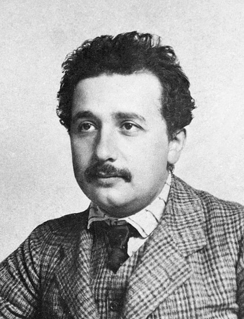

✨ Living as if Everything Were a Miracle
← Back to the Personal Blog Reading Guide 🧭 🧮
← Back to the Personal Blog Section 🧑🏫

1 ✨ Einstein’s Inspiring Quote
“There are only two ways to live your life:
One is as though nothing is a miracle.
The other is as though everything is a miracle.”
— Albert Einstein
2 📖 Context and Other Quotes
This phrase is often attributed to Albert Einstein (1879–1955) and has become quite popular in reflective anthologies.
Although there is no documentary confirmation that he actually wrote it this way, his thought — especially regarding wonder, curiosity, and mystery — converges with other authentic passages of his work.
Among them, we highlight:
- “He who can no longer pause to wonder and stand rapt in awe is as good as dead; his eyes are closed.”
- “The most beautiful experience we can have is the mysterious. It is the fundamental emotion that stands at the cradle of true art and true science.” (The World As I See It, 1931)
- And, in the essay On Education, Einstein directly addresses the task of the school: “The school has always been the most important means of transferring the wealth of tradition from one generation to the next.”
These quotes can be seen as a guiding thread: from personal wonder, through the philosophy of mystery, to the social mission of education.
3 🏛 Relevant Excerpt from “On Education” + Interpretation
“The school has always been the most important means of transferring the wealth of tradition from one generation to the next. […]
Through the rapid development of modern economic life, the family, as a bearer of tradition and education, has weakened. […]
Personalities are not formed by what is heard and said, but by work and activity.”
3.1 📌 Interpretation & Reflection
- Einstein recognizes that intellectual and cultural tradition is a collective heritage that spans generations.
- He differentiates passive knowledge (mere memorization) from living knowledge (rooted in practice and curiosity).
- He saw education as something alive and communal, not a mere mechanism of standardization.
4 🌍 Passages from The World As I See It + Commentary
4.1 The Human Condition
“My human condition fascinates me. […] I discover myself alive for some people, because their smile and happiness entirely condition me.”
Einstein reveals his vulnerability and the meaning he finds in human connection.
Not the isolated genius, but someone who recognizes himself in the other.
4.2 Gratitude, Inequality, and Simplicity
“Every day, thousands of times, I feel my life indebted to the work of the living and the dead. […] I dream of a simple and natural life, accessible and desirable to all.”
Here we see Einstein as a critic of social injustices and a defender of a simple and ethical life.
4.3 Freedom, Responsibility, and Humor
“I refuse to believe in freedom and in this philosophical concept. […] I then see the world with good humor. […] Some ideals guide my actions and orient my judgments.”
By adopting Schopenhauer’s maxim, he finds serenity: we are not completely free, but we can live with good humor and elevated ideals.
4.4 The Triple Ideal: Goodness, Beauty, Truth
“It was ideals that inspired my efforts and allowed me to live. They are called goodness, beauty, truth. […] Since youth I have despised wealth, glory, and luxury.”

His personal creed: to live guided by goodness, beauty, and truth.
He rejected fame, luxury, and wealth as petty ends.
4.5 Solitude and Independence
“I have a strong love for justice, for social commitment. […] I have tested man. He is inconsistent.”
The mature scientist reveals himself as solitary and independent, lucid about human limitations yet firm in his integrity.
5 💡 Final Reflection (Integrated)
With this mosaic of quotes, a multifaceted Einstein emerges:
- Poet of science, for whom mystery and wonder are the driving forces of life.
- Humanist educator, concerned with legacy and the formation of new generations.
- Existential philosopher, reflecting on freedom, responsibility, and ideals.
- Solitary man, aware of human contradictions yet guided by goodness, beauty, and truth.
📌 Message for us today:
Einstein reminds us that the true miracle does not lie in extraordinary phenomena, but in living with eyes open to mystery, in keeping alive the flame of curiosity, in cultivating justice and simplicity — and in never giving up on pursuing the ideals that give life meaning.
6 📌 Comments
← Back to the Personal Blog Reading Guide 🧭 🧮
← Back to the Personal Blog Section 🧑🏫
🔝 Back to Top
Blog do Marcellini — Exploring Mathematics with Rigor and Beauty.
Created by Blog do Marcellini with ❤️ and code.